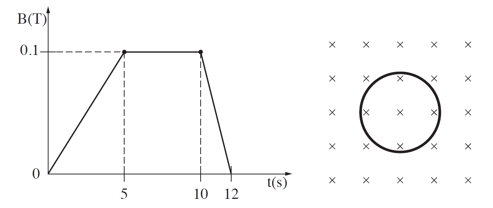

שאלה 5
בתרשים א מוצגת טבעת מוליכה שרדיוסה r = 3cm. שדה מגנטי אחיד ניצב למישור הטבעת.
גודל שדה זה משתנה כפונקציה של הזמן כמוצג בתרשים ב.

qimage-1.png
א.
חשבו את גודל הכא"מ המושרה בטבעת מהשנייה t = 0 עד t = 5s. (4 נקודות)
ב.
שרטטו גרף המתאר את הכא"מ המושרה בטבעת כפונקציה של הזמן מהשנייה t = 0 עד t = 12s. (10 נקודות)
ג.
קבעו מה הם פרקי הזמן שבהם זורם זרם מושרה בטבעת, ומהו כיוון הזרם בכל פרק זמן (עם כיוון השעון או נגד כיוון השעון). הסבירו את תשובתכם. (7 נקודות)
ד.
ההתנגדות החשמלית של הטבעת היא R = 5Ω. חשבו את ההספק המתפתח בטבעת בשנייה t = 7s ובשנייה t = 11s. (6 נקודות)
לאחר שהופסק השדה המגנטי, חותכים קטע קטן מהטבעת, ומפעילים מחדש את השדה המגנטי המשתנה כמתואר בתרשים ב.
ה.
האם הגרף ששרטטתם בסעיף ב ישתנה? האם תשובתכם לסעיף ד תשתנה? הסבירו. (6 1/3 נקודות)